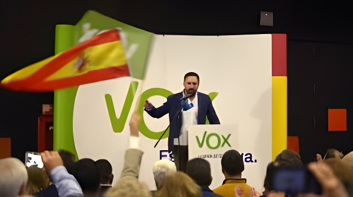

Fondé sur des positions traditionalistes radicales — hostilité à l'avortement, rejet des lois sur la violence de genre, opposition aux droits LGBT —, Vox adopte depuis plusieurs années une stratégie de discrétion sur ces sujets au profit d'un discours centré sur l'immigration et l'unité nationale. Ce repositionnement tactique, particulièrement visible dans ses accords de gouvernement régionaux, révèle les tensions internes d'un parti qui cherche à élargir son électorat sans renoncer à son socle idéologique.
Depuis sa fondation en 2013 par d'anciens cadres du Parti populaire (PP), Vox s'est défini comme le défenseur d'un conservatisme radical sur les questions de société. Le parti souhaite interdire l'avortement, supprimer des soins de santé publique les traitements accompagnant les transitions de genre, abroger les lois sur la violence de genre pour les remplacer par un texte neutre sur le genre, et démanteler les dispositifs de protection anti-discrimination en faveur des personnes LGBT. Il prône également le retrait des aides publiques aux associations LGBT et le refus de reconnaissance des familles arc-en-ciel.
Ces positions s'inscrivent dans une vision du monde dans laquelle la famille traditionnelle est conçue comme une institution antérieure à l'État, à protéger contre ce que le parti désigne comme des « idéologies de genre ». Vox est également hostile au féminisme institutionnel, qu'il accuse de promouvoir une théorie du genre jugée contraire aux valeurs espagnoles. Ces convictions ont structuré les premières années du parti et contribué à le différencier du PP, perçu comme trop modéré sur ces thèmes.
Malgré ce socle idéologique affiché, Vox a progressivement développé une stratégie de discrétion sur les questions sociétales. Le phénomène est particulièrement documenté dans le cadre de ses accords de gouvernement régionaux avec le PP : dans les régions d'Aragon et de Castille-et-León notamment, aucune mesure concernant l'avortement, la violence de genre ou les lois LGBTBI n'a figuré dans les textes d'accord de coalition. Le parti a délibérément mis de côté ces « drapeaux » pour renforcer un discours ouvriériste et attirer des électeurs de gauche.
Santiago Abascal lui-même illustre cette ambivalence. Évitant les déclarations incendiaires sur l'homosexualité ou l'avortement, il concentre ses attaques les plus virulentes sur l'immigration et les indépendantistes. En octobre 2025, il a même tenté un rapprochement tactique avec les électeurs homosexuels, se présentant comme le seul parti capable de les protéger des violences islamistes — tout en maintenant par ailleurs des propos homophobes qui ont suscité de vives critiques.
Fondation de Vox par d'anciens membres du PP. Positionnement dès l'origine contre l'avortement, le mariage homosexuel et en défense de la famille traditionnelle.
Percée en Andalousie (11 %). Vox devient audible avant tout sur l'immigration et l'unité nationale, ses sujets porteurs électoralement.
Gouvernements de coalition régionaux avec le PP. Dans plusieurs accords (Aragon, Castille-et-León), les mesures sur l'avortement, la violence de genre et les droits LGBT sont absentes des textes.
Rupture de toutes les coalitions régionales avec le PP sur la question des mineurs migrants. L'immigration reste le premier levier politique de Vox.
Vox propose un projet de « remigration » visant l'expulsion de 7 à 8 millions de personnes. Le discours sociétal reste marginal face à la priorité migratoire.
Plusieurs raisons expliquent cette mise en sourdine tactique. D'abord, les études d'opinion montrent que l'opinion espagnole est très favorable aux acquis progressistes en matière de droits sociaux : le mariage homosexuel est soutenu par une large majorité des Espagnols depuis des années, et l'avortement est une question sur laquelle Vox paie un coût électoral chaque fois qu'il l'aborde frontalement. L'Espagne figure parmi les pays européens où ces droits sont les plus ancrés dans les mentalités.
Ensuite, les accords de gouvernement régionaux avec le PP imposent une logique de compromis : plus Vox est minoritaire dans une coalition, plus il doit atténuer ses exigences les plus clivantes pour maintenir l'alliance. La stratégie de virage « ouvriériste » vise à séduire une partie de l'électorat populaire de gauche, notamment les couches modestes touchées par la crise du logement et la précarité, pour qui l'immigration et le pouvoir d'achat sont des préoccupations plus immédiates que les questions sociétales.
| Thème | Position officielle Vox | Discours public actuel |
|---|---|---|
| Avortement | Abrogation souhaitée | Mis en retrait |
| Droits LGBT | Démantèlement des lois | Discours atténué |
| Violence de genre | Abrogation de la loi | Absent des accords régionaux |
| Immigration | Remigration massive | Priorité absolue affichée |
| Unité nationale | Anti-indépendantisme | Thème central constant |
Cette ambivalence n'est pas sans tensions internes. Lors de la participation de Vox au gouvernement de Castille-et-León, une initiative anti-avortement avait déclenché une vive controverse avec le PP et mis en péril la coalition. La base militante traditionaliste du parti, attachée aux thèmes de société, ne comprend pas toujours ces mises en sourdine perçues comme des trahisons idéologiques. En Aragon, la décision de ne pas inclure de mesures anti-avortement dans l'accord de coalition a été justifiée par les cadres du parti comme une concession tactique nécessaire, non comme un abandon de conviction.
Le positionnement de Vox en 2026, crédité d'environ 17 à 19 % des intentions de vote selon les sondages, révèle également les limites de cette stratégie : malgré la radicalisation de son discours migratoire — notamment avec le projet de « remigration » annoncé en juillet 2025 — le parti stagne après son revers des législatives de 2023 (12,6 %, -19 sièges). L'élargissement vers un électorat ouvrier ou modéré bute sur la méfiance que suscite son profil idéologique global.
« Aucune mesure concernant l'avortement, la violence de genre ou les lois LGTBI n'apparaîtra en Aragon — des drapeaux que le parti a abaissés pour renforcer le virage ouvriériste. »
— Analyse des accords de coalition régionaux de Vox, 2023-2026La mise en sourdine des questions sociétales par Vox n'est pas un abandon idéologique, mais un calcul politique. Le parti conserve un programme traditionaliste radical, tout en comprenant que le terrain électoral espagnol ne lui permet pas de le mettre au premier plan sans perdre des voix. En concentrant l'essentiel de son énergie sur l'immigration, l'unité nationale et la critique du gouvernement Sánchez, Vox cherche à occuper un espace de « droite populaire » comparable à celui du Rassemblement national en France ou de Fratelli d'Italia en Italie — des formations qui ont également appris à mettre en sourdine leurs positions les plus clivantes sur la société pour accéder au pouvoir. Cette normalisation tactique, qui ne résout pas les contradictions internes du parti, sera mise à l'épreuve des prochaines échéances électorales espagnoles, attendues en 2027.
Fundado sobre posiciones tradicionalistas radicales —hostilidad al aborto, rechazo de las leyes de violencia de género, oposición a los derechos LGBT—, Vox lleva varios años adoptando una estrategia de discreción sobre estos temas, en beneficio de un discurso centrado en la inmigración y la unidad nacional. Este reposicionamiento táctico, especialmente visible en sus acuerdos de gobierno regional, revela las tensiones internas de un partido que busca ampliar su electorado sin renunciar a su base ideológica.
Desde su fundación en 2013 por exdirigentes del Partido Popular (PP), Vox se definió como el defensor de un conservadurismo radical en las cuestiones sociales. El partido desea prohibir el aborto, eliminar de la sanidad pública los tratamientos de transición de género, derogar las leyes de violencia de género para reemplazarlas por un texto de aplicación neutral en cuanto al sexo, y desmantelar los dispositivos de protección antidiscriminación en favor de las personas LGBT. También defiende la retirada de ayudas públicas a las asociaciones LGBT y el no reconocimiento de las familias arcoíris.
Estas posiciones forman parte de una cosmovisión en la que la familia tradicional se concibe como una institución anterior al Estado, que hay que proteger frente a lo que el partido denomina « ideologías de género ». Vox también es hostil al feminismo institucional, al que acusa de promover una teoría de género contraria a los valores españoles. Estas convicciones estructuraron los primeros años del partido y contribuyeron a diferenciarlo del PP, considerado demasiado moderado en estos temas.
A pesar de esta base ideológica declarada, Vox ha desarrollado progresivamente una estrategia de discreción sobre las cuestiones societales. El fenómeno está especialmente documentado en el marco de sus acuerdos de gobierno regional con el PP : en regiones como Aragón y Castilla y León, ninguna medida relativa al aborto, la violencia de género o las leyes LGTBI figuró en los textos de acuerdo de coalición. El partido puso deliberadamente a un lado estas « banderas » para reforzar un discurso obrerista y atraer a votantes de izquierda.
El propio Santiago Abascal ilustra esta ambivalencia. Evitando declaraciones incendiarias sobre la homosexualidad o el aborto, concentra sus ataques más virulentos en la inmigración y los independentistas. En octubre de 2025, incluso intentó un acercamiento táctico con los votantes homosexuales, presentándose como el único partido capaz de protegerlos de la violencia islamista, aunque mantuvo comentarios homófobos que suscitaron fuertes críticas.
Fundación de Vox por exmiembros del PP. Posicionamiento desde el origen contra el aborto, el matrimonio homosexual y en defensa de la familia tradicional.
Irrupción en Andalucía (11 %). Vox se hace audible principalmente sobre inmigración y unidad nacional, sus temas con mayor rendimiento electoral.
Gobiernos de coalición regional con el PP. En varios acuerdos (Aragón, Castilla y León), las medidas sobre aborto, violencia de género y derechos LGBT están ausentes de los textos.
Ruptura de todas las coaliciones regionales con el PP por la cuestión de los menores migrantes. La inmigración sigue siendo el primer palanca política de Vox.
Vox propone un proyecto de « remigración » que pretende expulsar entre 7 y 8 millones de personas. El discurso societal sigue siendo marginal frente a la prioridad migratoria.
Varios factores explican este silenciamiento táctico. En primer lugar, los estudios de opinión muestran que la sociedad española es mayoritariamente favorable a los derechos sociales conquistados : el matrimonio homosexual cuenta con el apoyo de una amplia mayoría de españoles desde hace años, y el aborto es una cuestión en la que Vox paga un coste electoral cada vez que lo aborda de frente. España figura entre los países europeos donde estos derechos están más arraigados en la mentalidad colectiva.
Además, los acuerdos de gobierno regional con el PP imponen una lógica de compromiso : cuanto más minoritario es Vox en una coalición, más debe atenuar sus exigencias más polarizadoras para mantener la alianza. La estrategia de giro « obrerista » busca seducir a parte del electorado popular de izquierda, especialmente las clases populares afectadas por la crisis de vivienda y la precariedad, para quienes la inmigración y el poder adquisitivo son preocupaciones más inmediatas que las cuestiones societales.
| Tema | Posición oficial de Vox | Discurso público actual |
|---|---|---|
| Aborto | Derogación deseada | Puesto en segundo plano |
| Derechos LGBT | Desmantelamiento de las leyes | Discurso atenuado |
| Violencia de género | Derogación de la ley | Ausente de acuerdos regionales |
| Inmigración | Remigración masiva | Prioridad absoluta declarada |
| Unidad nacional | Antiindependentismo | Tema central constante |
Esta ambivalencia no está exenta de tensiones internas. Cuando Vox participó en el gobierno de Castilla y León, una iniciativa antiaborto desencadenó una fuerte polémica con el PP y puso en peligro la coalición. La base militante tradicionalista del partido, apegada a los temas sociales, no siempre comprende estos silencios, percibidos como traiciones ideológicas. En Aragón, la decisión de no incluir medidas antiaborto en el acuerdo de coalición fue justificada por los dirigentes del partido como una concesión táctica necesaria, no como un abandono de convicciones.
El posicionamiento de Vox en 2026, con cerca del 17 al 19 % de intención de voto según los sondeos, revela también los límites de esta estrategia : a pesar de la radicalización de su discurso migratorio —con el proyecto de « remigración » anunciado en julio de 2025— el partido se estanca tras su revés en las legislativas de 2023 (12,6 %, -19 escaños). La ampliación hacia un electorado obrero o moderado choca con la desconfianza que genera su perfil ideológico global.
« Ninguna medida relativa al aborto, la violencia de género o las leyes LGTBI aparecerá en Aragón — banderas que el partido ha arriado para reforzar el giro obrerista. »
— Análisis de los acuerdos de coalición regional de Vox, 2023-2026El silenciamiento de las cuestiones societales por parte de Vox no es un abandono ideológico, sino un cálculo político. El partido conserva un programa tradicionalista radical, pero comprende que el terreno electoral español no le permite situarlo en primer plano sin perder votos. Al centrar la mayor parte de su energía en la inmigración, la unidad nacional y la crítica al gobierno Sánchez, Vox aspira a ocupar un espacio de « derecha popular » comparable al del Rassemblement National en Francia o al de Fratelli d'Italia en Italia — formaciones que también aprendieron a silenciar sus posiciones más polarizadoras en materia social para acceder al poder. Esta normalización táctica, que no resuelve las contradicciones internas del partido, se pondrá a prueba en las próximas citas electorales españolas, previstas para 2027.